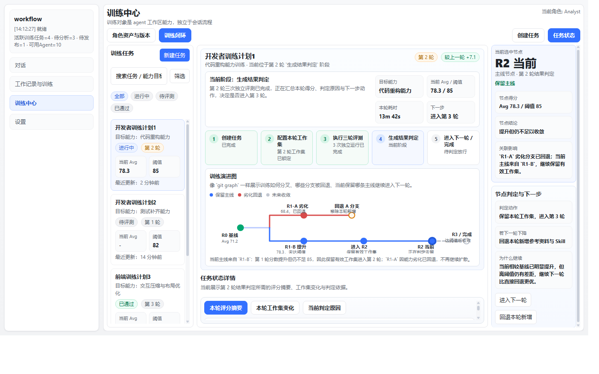
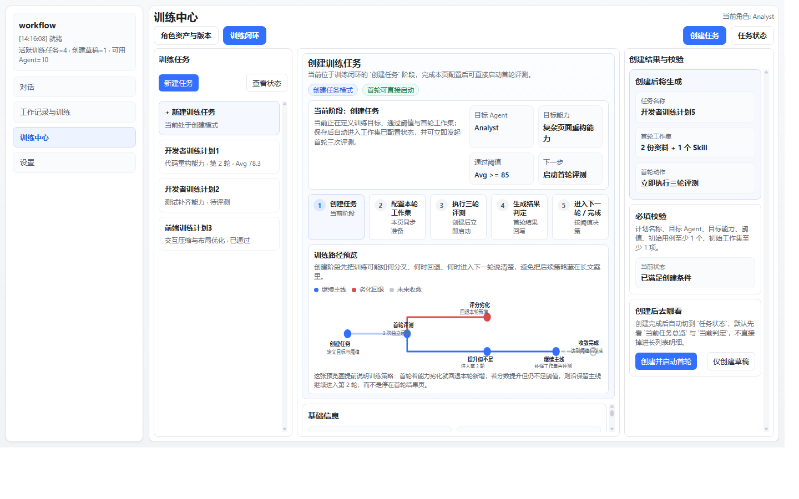

验收截图复用
角色资产与版本页
覆盖统一入口、角色卡、角色详情、版本历史与训练中心主布局。

覆盖统一入口、角色卡、角色详情、版本历史与训练中心主布局。
覆盖当前运行态中的手动计划、队列列表与执行结果区，作为训练闭环优化前的基线截图；其中外部训练师匹配已不再属于当前有效口径。

覆盖左侧任务列表、中部流程总览、训练演进图与状态详情、右侧当前判定；当前原型已按“固定视口 + 底边平齐 + 防裁切 + 区内滚动条”收口，并补充了类似 git 图的训练分叉/回退/收敛表达。

覆盖新建任务入口、计划定义、初始用例、初始参考资料与 Skill，以及右侧校验区；当前原型与任务状态页共用同一套训练流程阶段语义，并提前预览“劣化回退 / 提升但不足进入下一轮”的路径分叉。
